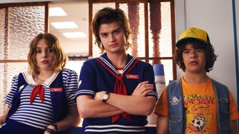
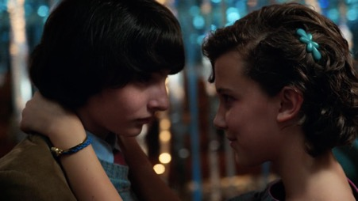
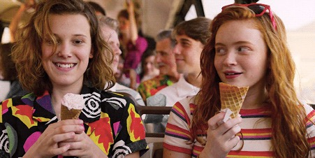

Stranger Things 3
Eleven and the crew has finally returned for more Upside Down-generated terror and 80s nostalgia as the hit series is back on Netflix after a long absence.
September 10, 2019
I just spent the last two days glued to my laptop, after months of waiting, desperate to know what’s next for the cast. And if you are a fan of its horror nostalgia vibe, then you will not be disappointed. Like its previous seasons, it continues to elicit its vintage 80s horror movie feel with its usual nostalgic elements, such as the Sam Goody music stores and theatre marquees with popular movies from 1985. Stranger Things does not fail to transform itself into an enthralling summer adventure that revels in its 80s nostalgia without forgetting the rich relationships that make the series so appealing.
One thing Stranger Things continues to excel is at letting separate teams of characters to challenge the scourge from different angles without crossing paths with each other until the end of the season. For instance, Nancy and Jonathan, who are now both working for The Hawkins Post newspaper, continues their peculiar investigative path again and Hopper and Joyce will have their own mission as well. The romantic prospects of these familiar pairings will be explored this season. The comedy team of Dustin and Steve is also fortunately intact, with the addition of Robin – Steve’s new co-worker.

With the kids having reached their teenage years, we see the developing relationships within the group, especially the one between Mike and Eleven and Luke and Max. We also see Dustin coming back home from camp with some leadership and a girlfriend.

Additionally, the female bonding between Eleven and Max compliments well with Nancy’s journey for female empowerment at The Hawkins Post this season.

There are also new additions that makes this season more enjoyable like Lucas’s sister Erica who makes an excellent sassy pre-teen, and let’s not forget Robin.
The ending was brilliant. The Byers are moving out of Hawkins, with El, permanently. It was honestly heartbreaking to see their circle of childhood friends part ways. There’s also hints for season 4 – is Hopper alive and trapped in a Russian prison? The Demogorgon is back? Did El lose her powers? I have so much questions and I cannot wait for another season.
It is really fascinating to watch a cast that is growing up before our eyes in a time when a lot of the viewers were kids. This season certainly has the message on the nature of growth and change. I know something will bring them back together in season 4. From the cinematography to the relationships between the characters, I was hooked all over again. It is definitely a fantastic series that I would recommend to anyone who loves a supernatural, mystery show. Definitely binge-worthy.
Rating – 9/10